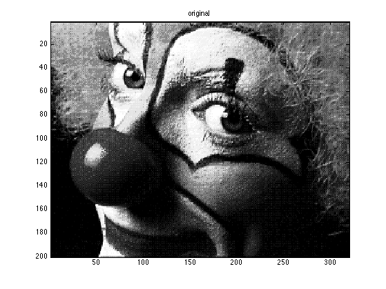
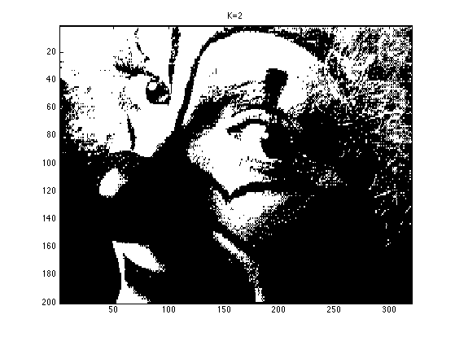

Vector Quantization Demo
setSeed(0);
loadData('clown');
figure;
imagesc(X); colormap(gray); title('original')
printPmtkFigure('vqDemoClownOrig');
[nrows ncols ncolors] = size(X);
data = reshape(X, [nrows*ncols ncolors]);
for K=[2]
[mu, compressed, errHist] = kmeansFit(data, K);
compressed2 = kmeansEncode(data, mu);
assert(isequal(compressed, compressed2))
decompressed = kmeansDecode(compressed, mu);
Qimg = reshape(decompressed, [nrows ncols ncolors]);
figure;
imagesc(Qimg); colormap(gray)
title(sprintf('K=%d',K))
printPmtkFigure(sprintf('vqDemoClown%d', K));
end
 